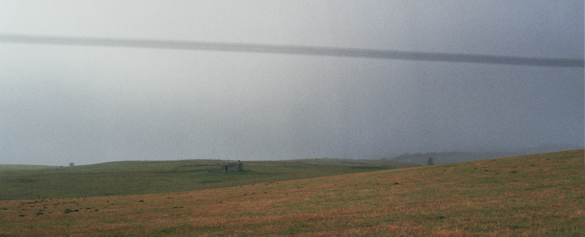

{kind=link}
 .
.Arthur Zwaenepoel (Gent °1995)

I am currently a PhD student in the group of professor Yves Van de Peer, conducting research on the evolutionary importance of polyploidy. In practice I have mainly worked on statistical phylogenetic methods for the inference of genome duplications from comparative genomic data and modeling of gene family evolution, where I have come to prefer a Bayesian approach towards statistics. More broadly, I’d say I am interested in theoretical biology and statistics. Besides my aspirations in science, I take a strong interest in philosophy, music and literature. I enjoy computer programming, playing music, long(ish)-distance running and traveling by bicycle.
notes | publications | code | other
Fisher’s geometric model and the cost of complexity
Published:
Publications (scholar)
Preprints:
A two-type branching process model of gene family evolution Arthur Zwaenepoel, Yves Van de Peer; 2021.03.18.435925; doi: https://doi.org/10.1101/2021.03.18.435925
Whale: Flexible Bayesian gene tree reconciliation using amalgamated likelihood estimation and probabilistic programming.
Beluga: Reversible-jump MCMC for model-based inference of ancient WGD events using gene count data.
DeadBird: Statistical analysis of comparative genomic data using phylogenetic birth-death process models
wgd: simple command line tools for estimating \(K_\mathrm{S}\) distributions, synteny analyses and visualization of these things to unveil ancient WGD events.
… and more on github
bruine beer, featured on bandcamp daily’s ‘Best New Ambient Music’ here. Also see vuilbak recordlabel, also here.
A particularly nice picture of my cat and me.
Other biographic trivia:
juliapandoc, vim, cmus.